jsPsychを用いたWEB実験の実施：Google Spreadsheetにデータを保存しよう！
jsPsychはFirebaseやPavloviaを使って実施することができますが，Google Spreadsheet上で実施することもできます。それぞれ一長一短はありますが，Google Spreadsheetは日常的に使っている方もおられるでしょうし，サーバー費用などはかからないので，かなりお手軽に実施できます（ただ，Googleのサービスによって１日に作成可能なスプレッドシートの数には制限があるので，大規模なデータ収集には向かないと思います）。
詳しくは，jsPsychSheet: Running online behavioral experiments using jsPsych and Google Sheetを読んでいただけたらとは思いますが，以下では簡単に解説をします。
1.jsPsychSheetをForkして，GitHub pageを設定する
jsPsychSheetのGitHubリポジトリに移動して，Forkします(赤で囲った部分をクリックします)。
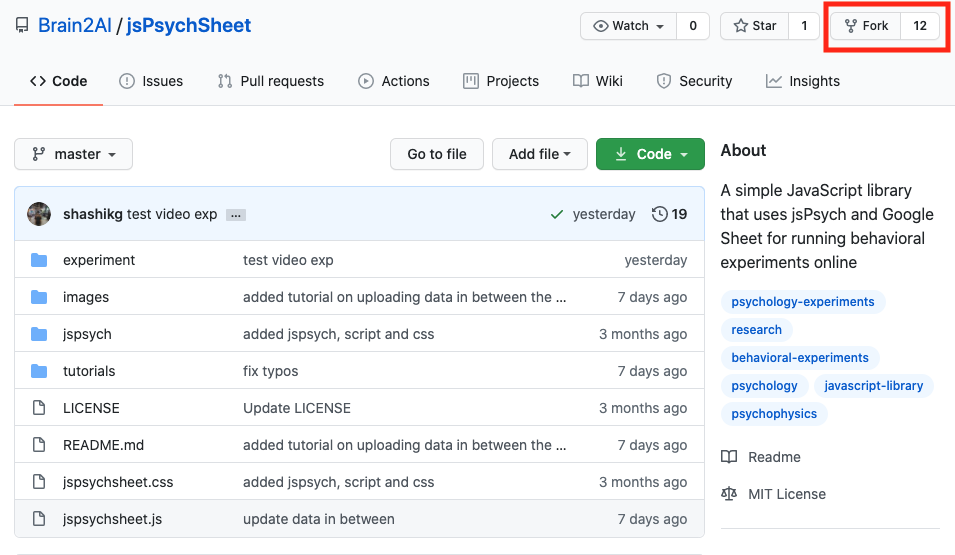
自分のGitHubアカウントにjsPsychSheetリポジトリがForkされたら，Settingsタブをクリックします。
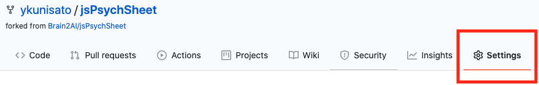
Settingsタブで下にスクロールして，GitHub Pagesってところにいきます。そこで，masterブランチを選んでください。「save」って出てくるので，それを押します。これで，ForkしたリポジトリのGitHub Pagesが有効になりました。
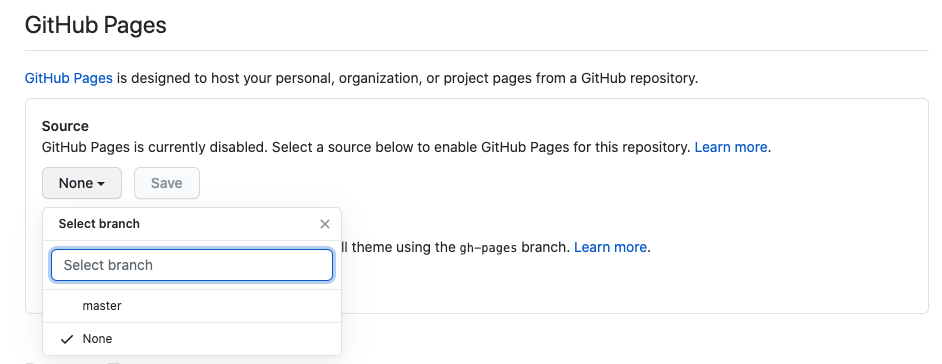
2.jsPsych課題の準備
以下の赤線で囲っている部分を押して，「Clone with HTTPS」のURLをコピーする。
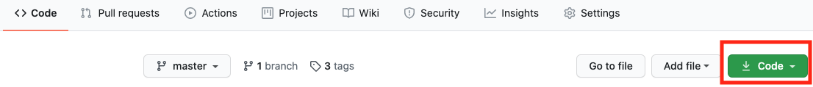
RStudioでFile→New Project..→Version Contriol→Gitで，コピーしたURLを貼り付ける。
Simple Reaction Time Taskの準備
jsPsychのチュートリアルにあるSimple Reaction Time Taskを作ります。jsPsychSheetのリポジトリ内のexperimentフォルダ内に課題をおきます。すでに，experimentフォルダ内には，Simple Reaction Time Taskが配置されていますが，以下では，Rmarkdownで再度作りましょう。
RStudioでexperimentフォルダをカレントワーキングディレクトリにする
以下をコンソールで実行
library(jsPsychRmd)
set_jsPsych()index.Rmdを開いて，{js}チャンク内にjsPsychチュートリアルのThe final codeの scriptから /scriptの内容をコピーして貼り付けします。
{js}チャンクの上の{r}チャンク内を以下のようにします。
library(htmltools)
tagList(
tags$script(src='jspsych-6.1.0/jspsych.js'),
tags$script(src='jspsych-6.1.0/plugins/jspsych-html-keyboard-response.js'),
tags$script(src='jspsych-6.1.0/plugins/jspsych-image-keyboard-response.js'),
tags$script(src='jspsych-6.1.0/plugins/jspsych-fullscreen.js')
)ちゃんと動作するかKnitをして確かめてください。課題が動いたら，Gitでコミット＆プッシュをしてください。
jsPsych課題でjsPsychSheetを使うための調整
- ForkしたjsPsychSheetリポジトリは，GitHub Pagesになっているので，以下のURLのいち部をユーザーアカウント名にするとアクセスできます。
https://
- 上記の課題をGoogle spreadsheet上で走らせる場合に，上記のURLからファイルにアクセスをします。そこで，画像を含む刺激系のファイル，jsPsychのjsライブラリなどは，上記のURLに変更をします。具体的には以下のようにします。
修正1前({r}チャンク内のjsライブラリ)
library(htmltools)
tagList(
tags$script(src='jspsych-6.1.0/jspsych.js'),
tags$script(src='jspsych-6.1.0/plugins/jspsych-html-keyboard-response.js'),
tags$script(src='jspsych-6.1.0/plugins/jspsych-image-keyboard-response.js'),
tags$script(src='jspsych-6.1.0/plugins/jspsych-fullscreen.js')
)修正1後({r}チャンク内のjsライブラリ)
- GitHubのユーザーアカウント名はご自身のアカウント名に変更ください。
- jspsychsheet.jsとjspsychsheet.cssも追加します。
library(htmltools)
tagList(
tags$script(src='https://GitHubのユーザーアカウント名.github.io/jsPsychSheet/experiment/jspsych-6.1.0/jspsych.js'),
tags$script(src='https://GitHubのユーザーアカウント名.github.io/jsPsychSheet/experiment/jspsych-6.1.0/plugins/jspsych-html-keyboard-response.js'),
tags$script(src='https://GitHubのユーザーアカウント名.github.io/jsPsychSheet/experiment/jspsych-6.1.0/plugins/jspsych-image-keyboard-response.js'),
tags$script(src='https://GitHubのユーザーアカウント名.github.io/jsPsychSheet/experiment/jspsych-6.1.0/plugins/jspsych-fullscreen.js'),
tags$script(src="https://GitHubのユーザーアカウント名.github.io/jsPsychSheet/jspsychsheet.js"),
tags$link(rel="stylesheet",href="https://<GitHubのユーザーアカウント名>.github.io.github.io/jsPsychSheet/jspsychsheet.css")
)修正2前({js}チャンク内のimgの場所)
var instructions = {
type: "html-keyboard-response",
stimulus: "<p>In this experiment, a circle will appear in the center " +
"of the screen.</p><p>If the circle is <strong>blue</strong>, " +
"press the letter F on the keyboard as fast as you can.</p>" +
"<p>If the circle is <strong>orange</strong>, press the letter J " +
"as fast as you can.</p>" +
"<div style='width: 700px;'>"+
"<div style='float: left;'><img src='img/blue.png'></img>" +
"<p class='small'><strong>Press the F key</strong></p></div>" +
"<div class='float: right;'><img src='img/orange.png'></img>" +
"<p class='small'><strong>Press the J key</strong></p></div>" +
"</div>"+
"<p>Press any key to begin.</p>",
post_trial_gap: 2000
};修正2後({js}チャンク内のimgの場所)
var instructions = {
type: "html-keyboard-response",
stimulus: "<p>In this experiment, a circle will appear in the center " +
"of the screen.</p><p>If the circle is <strong>blue</strong>, " +
"press the letter F on the keyboard as fast as you can.</p>" +
"<p>If the circle is <strong>orange</strong>, press the letter J " +
"as fast as you can.</p>" +
"<div style='width: 700px;'>"+
"<div style='float: left;'><img src='https://GitHubのユーザーアカウント名.github.io/jsPsychSheet/experiment/img/blue.png'></img>" +
"<p class='small'><strong>Press the F key</strong></p></div>" +
"<div class='float: right;'><img src='https://GitHubのユーザーアカウント名.github.io/jsPsychSheet/experiment/img/orange.png'></img>" +
"<p class='small'><strong>Press the J key</strong></p></div>" +
"</div>"+
"<p>Press any key to begin.</p>",
post_trial_gap: 2000
};修正3前({js}チャンク内のimgの場所)
/* test trials */
var test_stimuli = [
{ stimulus: "img/blue.png", data: { test_part: 'test', correct_response: 'f' } },
{ stimulus: "img/orange.png", data: { test_part: 'test', correct_response: 'j' } }
];修正3後({js}チャンク内のimgの場所)
/* test trials */
var test_stimuli = [
{ stimulus: "https://GitHubのユーザーアカウント名.github.io/jsPsychSheet/experiment/img/blue.png", data: { test_part: 'test', correct_response: 'f' } },
{ stimulus: "https://GitHubのユーザーアカウント名.github.io/jsPsychSheet/experiment/img/orange.png", data: { test_part: 'test', correct_response: 'j' } }
];修正4前(結果の保存方法)
/* start the experiment */
jsPsych.init({
timeline: timeline,
on_finish: function() {
jsPsych.data.displayData();
}
});修正4後(結果の保存方法)
- csv形式で保存するようにします
jsPsych.init({
timeline: timeline,
on_finish: function() {
jsPsychSheet.uploadData(jsPsych.data.get().csv());
}
});修正ができたら，knitして，Gitでコミット＆プッシュをしてください。
3.Google Spreadsheetの設定
Google Driveで新規にスプレッドシートを作ります（名前を適当につけてください）。
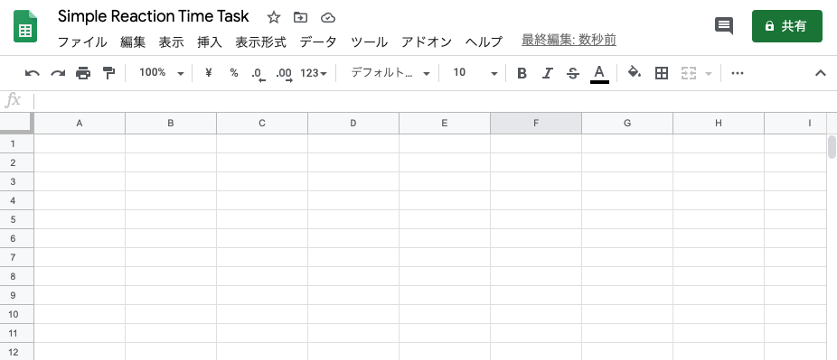
「ツール」から「スクリプトエディタ」を押してください。
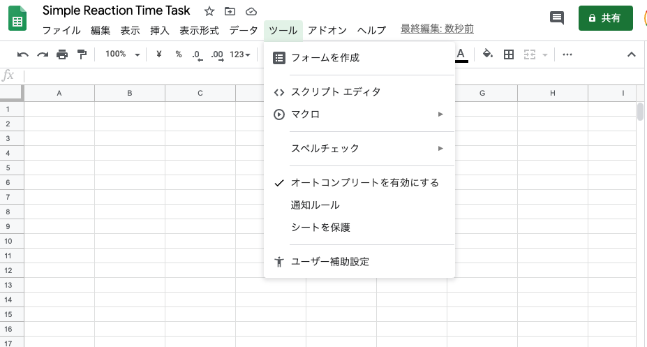
以下のような画面がでてきます。
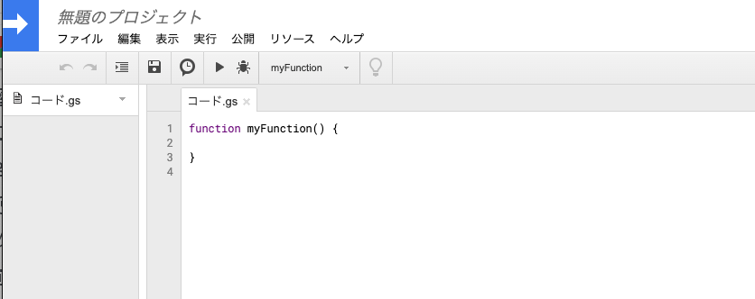
以下のコードをコード.gsに上書きしてください。
// App Script function to host the html page
function doGet() {
return HtmlService.createHtmlOutputFromFile('index');
}
// App Script function to interact with google sheet
function addData(data) {
var ss = SpreadsheetApp.getActiveSpreadsheet();
var sheet = ss.insertSheet(0);
var i;
for(i=0; i< data.length; i++){
sheet.appendRow(data[i]);
}
}
// App Script function to interact with google sheet
function addDataMultiBlock(data, start=0) {
var ss = SpreadsheetApp.getActiveSpreadsheet();
if (start == 1){
var sheet = ss.insertSheet(0);
} else {
var sheet = ss.getActiveSheet();
}
var i;
for(i=0; i< data.length; i++){
sheet.appendRow(data[i]);
}
}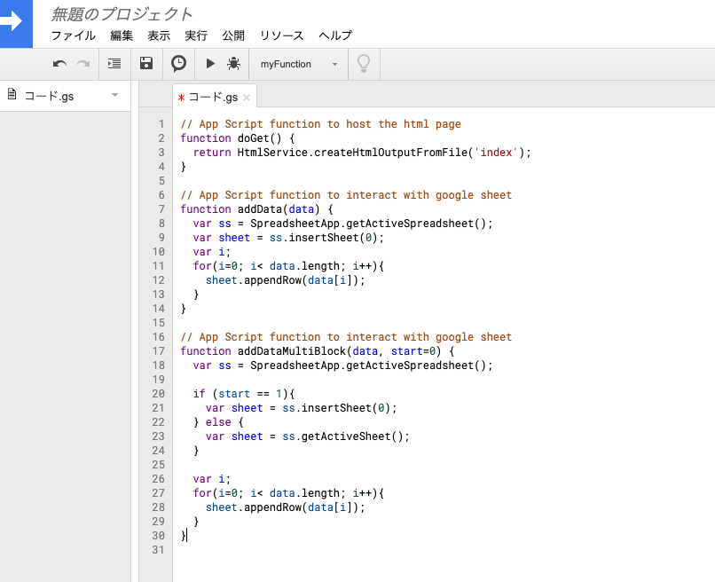
保存します。

「ファイル」から「HTMLファイル」を押します。
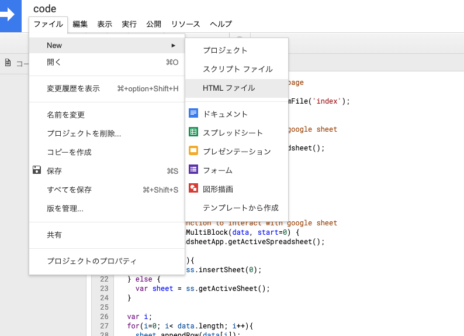
必ず，index.htmlという名前にしてから，「OK」を押してください。
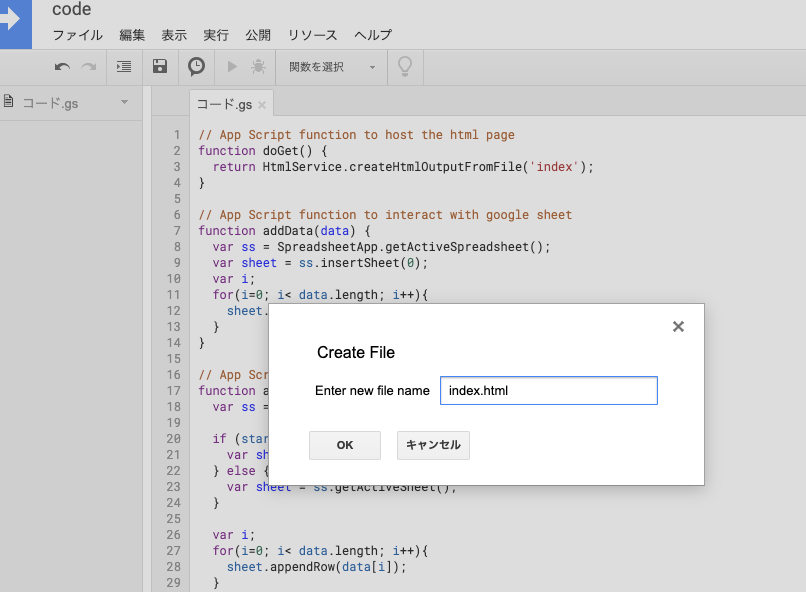
index.htmlが開くので，ここに，先程RStudio上で作成した実験課題のHTMLを貼り付けます（具体的には，HTMLファイルをクリックして，Open in Editorを選びます。その開いた内容をコピーして，貼り付けます）。
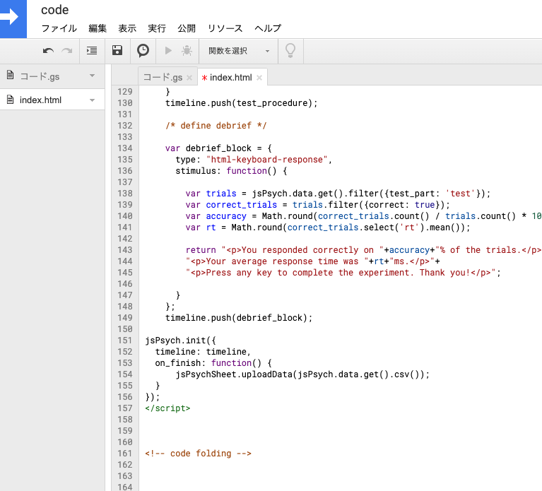
「公開」から「ウェブアプリケーションとして導入」を押します。
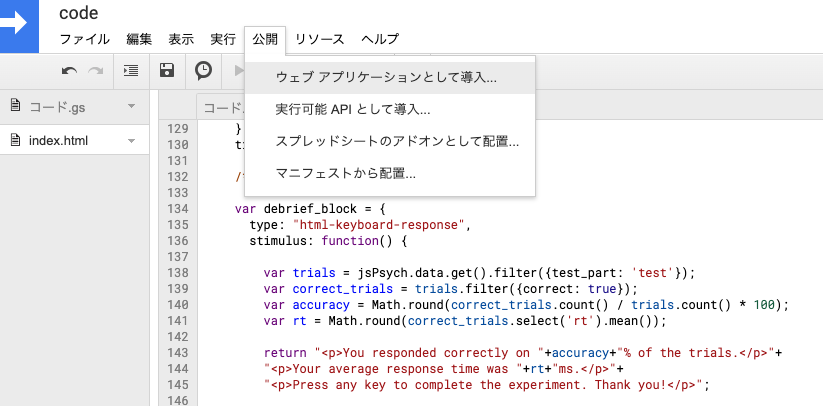
「who has access to the app:」では，「全ユーザー」を選んでください。Deployを押します。
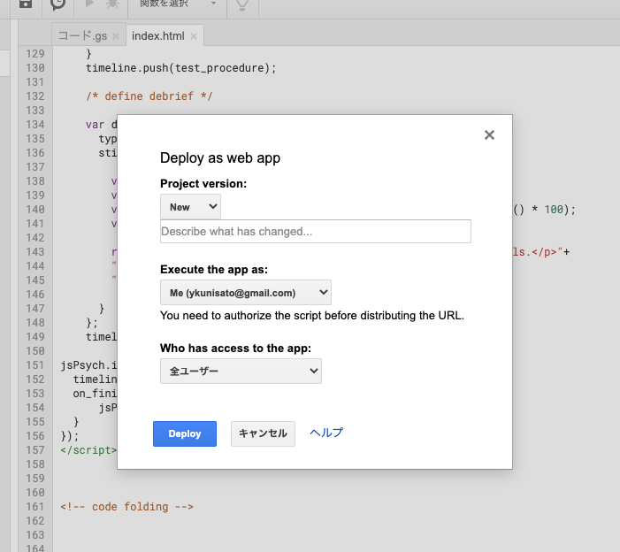
「許可を確認」を押します。
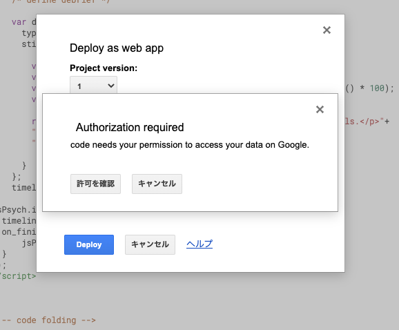
なんか怖いメッセージがでてきます。
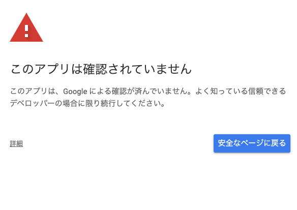
「詳細」を押して，「(安全ではないページ)へ移動」を押します。
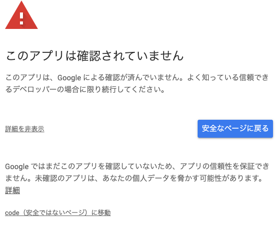
課題が行われるウェブページのURLが出てくるのでコピーします。コピーしたURLにいくと実験課題ができます。
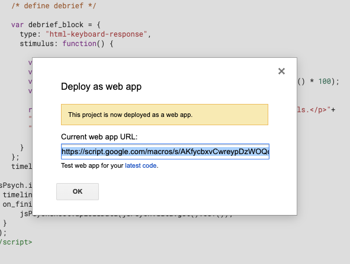
課題が終わったら，以下のようにスプレッドシートにデータが保存されます。
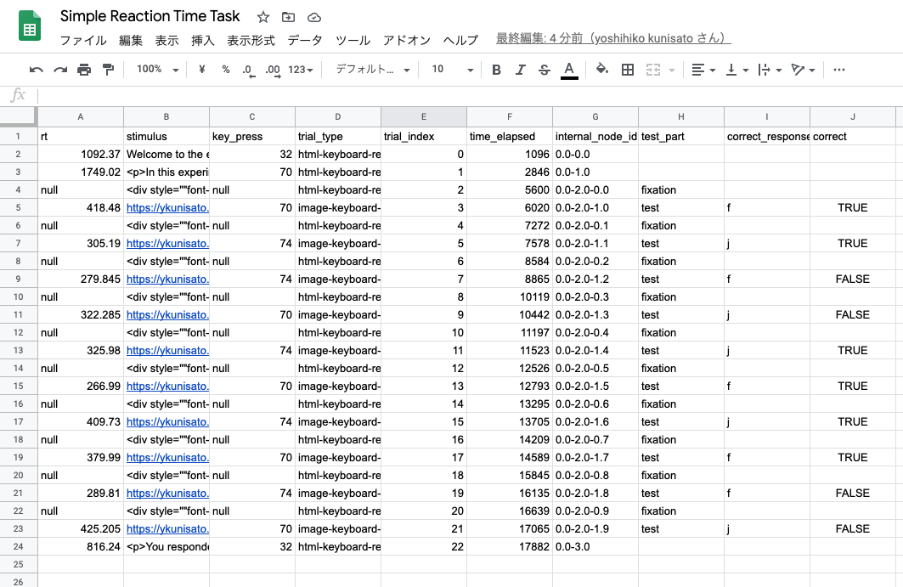
設定を丁寧にすれば，思ったよりも簡単にGoogle スプレッドシートを使って課題の実行とデータの保存ができました！